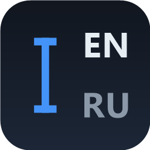
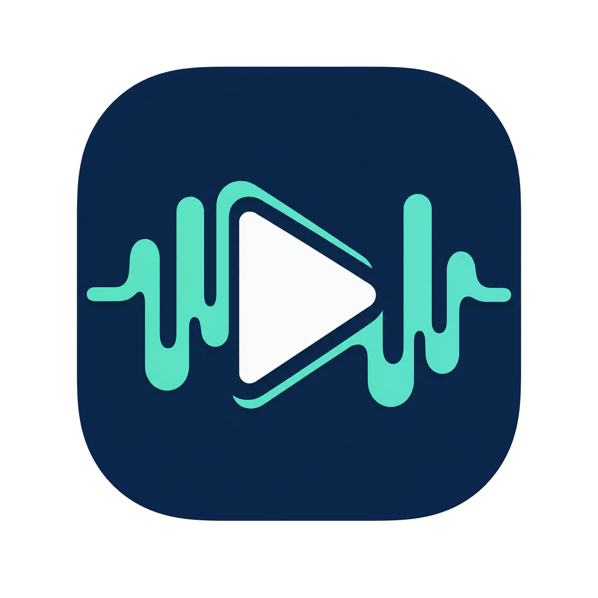
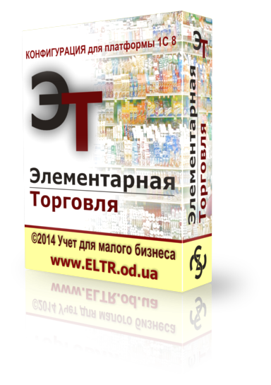

Fast Media Sorter & Organizer
Android AppAndroid application for batch sorting of photos, videos, audio, and documents. Supports local folders, SMB / SFTP / FTP network shares, and cloud storage (Dropbox, Google Drive, OneDrive).
A practical collection of independent projects: sort and play media, work with documents, check storage, automate repeated actions, organise business accounting, or build a disciplined workflow with AI agents. Open the project that matches the task in front of you.
Independent applications and working methods for files, media, documents, storage, automation, and AI-assisted development.
Android application for batch sorting of photos, videos, audio, and documents. Supports local folders, SMB / SFTP / FTP network shares, and cloud storage (Dropbox, Google Drive, OneDrive).
Sort a large photo or video folder with one key per file: view, then move, copy, rename, or delete. Optional SFTP folder sharing opens chosen folders on an Android phone and stays off until you switch it on. The separate Folder Share Server edition runs sharing as a Windows service, with the viewer optional.

A lightweight Windows system tray utility that corrects text typed in the wrong keyboard layout (QWERTY <-> Cyrillic) with a global hotkey and active layout indicator.
Converter for Windows: EPUB, PDF, MOBI, AZW3, FB2, RTF, TXT, and Markdown to local HTML with optional automatic ebook translation via Google Translate API or local Ollama LLMs.
Windows CLI utility for drive benchmarking, fake-capacity detection, secure data wiping (secure wipe), and duplicate file analysis/management.
Windows system tray application to instantly run frequently used software, console scripts, automation commands, and tasks in a single click.
Portable, stack-agnostic kit for AI-assisted development: rules, skills, roles, a spec lifecycle, and persistent memory for agent-driven work in git repositories.

Windows player for internet radio, live video, and RTSP channels: browse a curated catalog, filter by category, language, country, or media type, then play in the main or a focused window.
A current 1C product for practical trade, accounting, and process automation.

Accounting and trade management for small stores, service businesses, workshops, crews, and warehouses.
I am open to professional contacts, collaboration, and discussing custom solutions in 1C Enterprise development, workflow automation, desktop/mobile tools, and data/file processing utilities.